Silas Heaphy
Game Designer & Developer, Yale CS ’29
Hi, I'm Silas Heaphy, a game designer, developer, and current Yale computer science student. I've been making video games since I was a kid, inspired by indie and narrative games, and I've shipped two titles on Steam (Nitrojet, 2023; The Fog, 2019). I love pushing how novel approaches to gameplay systems and mechanical design can shape exploration and narrative, bringing together rigorous engineering and distinctive creative voice.
- Game Design
- Gameplay Programming
- Unity
- GameMaker
A smaller version of Critters and You’s ecosystem, running live from a JavaScript port of the game’s GameMaker code: a quarter of the game’s map, with starting counts and predator behavior scaled to fit. Hold the mouse button on the map to spear critters.
Featured Work
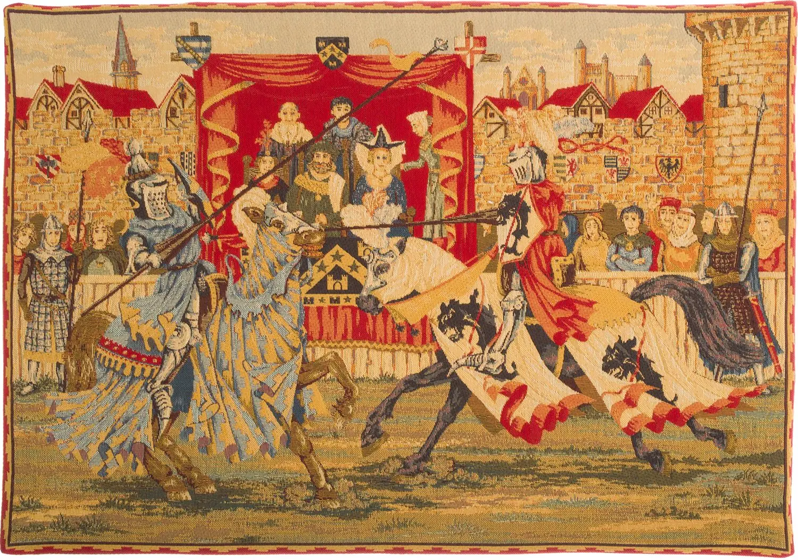
Tapestrague
2026–27Leading a 25-person team at Amoriem Labs on a 2D puzzle side-scroller set inside a medieval tapestry being eaten by mold.
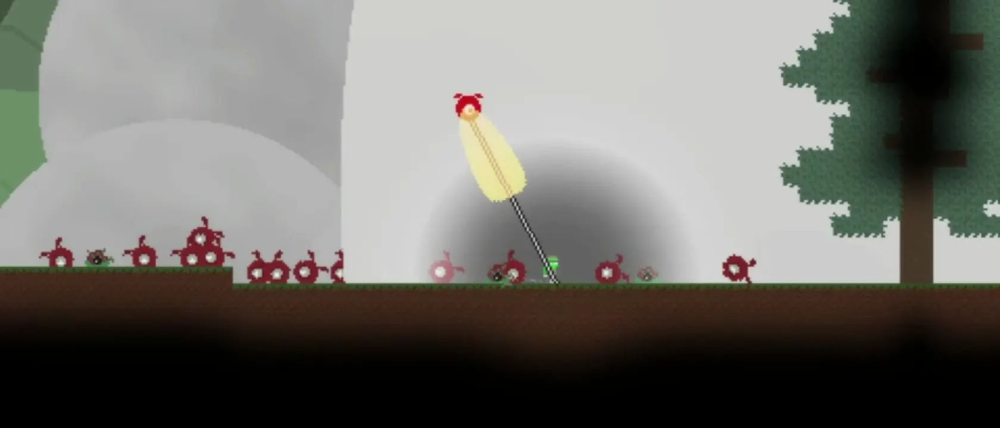
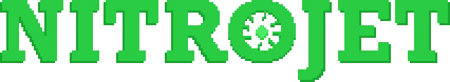
Nitrojet
2023An expansive and chaotic Metroidvania where everything is destructible. Features interconnected map progression and unique combat & movement design.
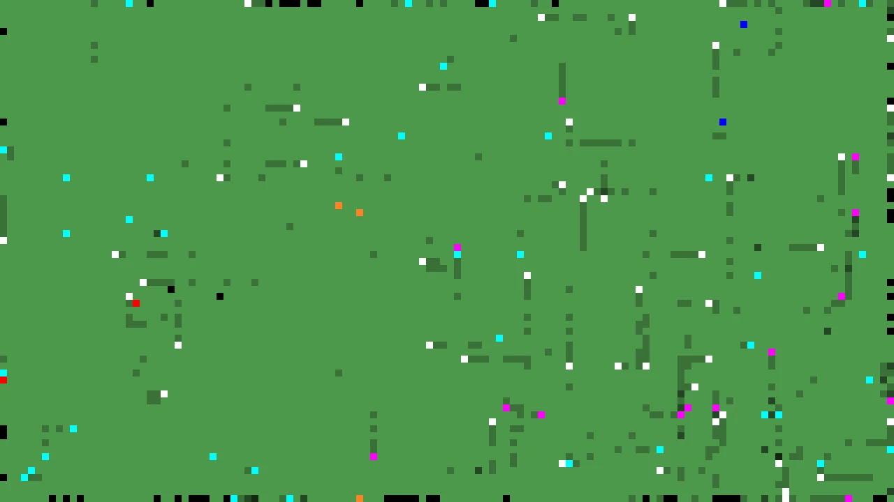
Critters and You
2026A fully-simulated, finely-balanced ecosystem, at risk of collapse for the profit of a single survivalist.
Other Projects
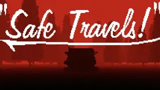
2025–26 27 Photos A photo-taking walking simulator and puzzle game. Role as designer gave me documented experience in mechanical, level, and puzzle design alongside team coordination. Puzzle, Level Design, Documentation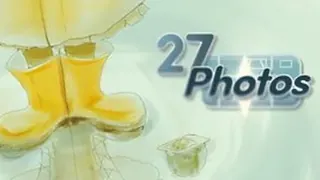
2026 Beach Car Game Thoroughly documented design process, road-trip text adventure about a group of SoCal surfer boys fleeing a motorgang. Text Adventure, Documentation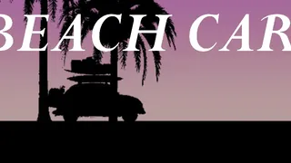
2025–26 Pop-Off! Pop-star boss rush where Guitar Hero meets turn-based RPG, developed for Girly Pop Game Jam. Rhythm, Turn-based Combat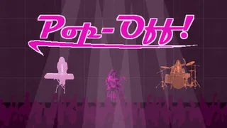
Build Your Own Platformer Pick-up-and-play development tool that lets players build their own RPG player character and levels. Game Builder, Java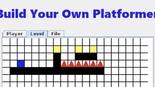
2025 Gravitation Newtonian arcade game about weaving through the chaos of colliding astral bodies. Arcade, Physics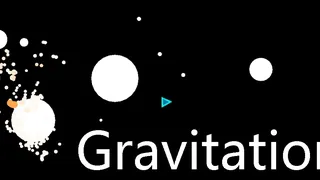
2022 Dice Bowling Arcade game where each roll of the dice (roll of yourself) is the difference between triumph and failure. Arcade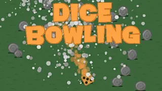
2020 It’s About Slime A lone milkman fights off hoards of slimes. Eight character builds and local multiplayer. Arcade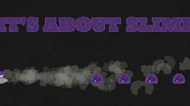
2019 The Fog Collect lantern in a desperate attempt to survive the fog. Explore an abandoned world in this atmospheric platformer. Platformer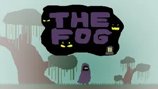